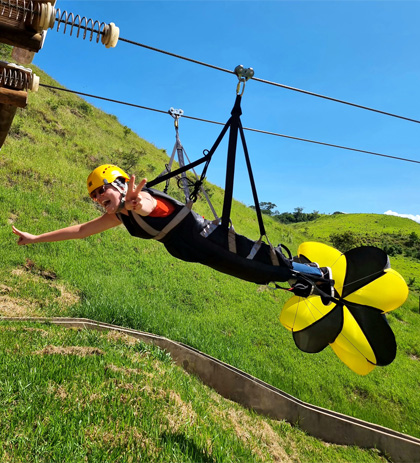

<!DOCTYPE html>
<html lang="pt-br">
</html>
<title>Estância Pedra do Índio</title>
    <meta charset="UTF-8">
    <meta http-equiv="X-UA-Compatible" content="IE=egde">
    <meta name="viewport" content="width=device-width, initial-scale=1.0 ">
    <link rel="stylesheet" href="index.css">
 </head>

<body>
    <header>
        <div class="center">
          </img>
        </div>
        <h1>Estância Pedra do Índio</h1>
      </header>
<main>
<section>
<p>
    A Pedra do Índio é um ponto turístico icônico localizado no município de Ribeirão Claro, no estado do Paraná. Este monumento natural possui grande importância histórica, cultural e geológica para a região.

    A formação rochosa recebeu esse nome devido a sua aparência, que lembra o perfil de um rosto de índio. A Pedra do Índio está situada em uma área de beleza natural exuberante, cercada por vegetação nativa e oferecendo vistas panorâmicas deslumbrantes do entorno. 
    
    A história da Pedra do Índio está intimamente ligada às lendas e tradições indígenas locais. Conta-se que a região era habitada por tribos indígenas antes da chegada dos colonizadores europeus. A pedra teria sido um local de significância espiritual e cultural para esses povos, que a utilizavam como ponto de observação e realização de rituais.
    
    Com o avanço da colonização e a exploração da região, a Pedra do Índio ganhou notoriedade entre os moradores e visitantes. Tornou-se um símbolo de Ribeirão Claro, representando a conexão da cidade com sua herança indígena e sua rica história natural. 
    
    Atualmente, a Pedra do Índio é um destino popular para turistas e amantes da natureza, que visitam o local para caminhadas, escaladas e para apreciar a vista panorâmica. Além de seu valor como atração turística, a pedra é um marco histórico que relembra a presença e a importância dos povos indígenas na formação da identidade cultural da região.
    
    A preservação da Pedra do Índio é vital para manter viva a memória histórica e cultural de Ribeirão Claro, bem como para promover o turismo sustentável e a valorização do patrimônio natural do município.
</p>
</section>
</main>


    
      <h2>Oportunidades de Trabalho na Estância Pedra do Índio em Ribeirão Claro, Paraná</h2>
      <main>
        <section>
          <p>
      A Estância Pedra do Índio, situada em Ribeirão Claro, Paraná, é uma propriedade que se destaca pela integração entre práticas tradicionais e modernas na agricultura e na pecuária. Este empreendimento não apenas contribui para o desenvolvimento econômico local, mas também oferece uma ampla gama de oportunidades de trabalho para a comunidade e para profissionais especializados.
      
      Áreas de Atuação e Oportunidades de Trabalho
      
      Pecuária e Agricultura
      
         Pecuária,
         a Estância Pedra do Índio é conhecida por sua criação de gado de alta qualidade e práticas de manejo sustentável. As oportunidades de trabalho nesta área incluem:
         - Veterinários e Zootecnistas: Para a saúde e bem-estar dos rebanhos, além de aprimorar a genética e produtividade do gado.
         - Manejadores e Cuidadores de Animais: Responsáveis pelo cuidado diário, alimentação e manejo dos animais.
         - Operadores de Máquinas Agrícolas: Envolvidos na manutenção e operação de equipamentos para o manejo de pastagens e colheitas.
      
         Agricultura,
         com uma abordagem moderna e inovadora, a fazenda investe em técnicas avançadas de cultivo e produção. As vagas disponíveis incluem:
         - Agrônomos: Especialistas em cultivo de grãos e outras culturas, responsáveis por planejar e gerenciar as práticas agrícolas.
         - Técnicos Agrícolas:Para ajudar na implementação de técnicas de cultivo, controle de pragas e fertilização.
      
      Tecnologia e Inovação,
      
         a integração de tecnologias modernas na Estância Pedra do Índio abre oportunidades para profissionais especializados:
         - Engenheiros Agrícolas e de Sistemas: Para a implementação de tecnologias de precisão, como sistemas de irrigação automatizados e monitoramento de culturas.
         - Especialistas em Agricultura de Precisão: Responsáveis pelo uso de dados e análises para melhorar a produtividade e sustentabilidade das práticas agrícolas.
      
      Gestão e Administração,
      
         a administração da estância exige uma equipe organizada e eficiente:
         - Gerentes de Fazenda: Para supervisionar operações, implementar estratégias e gerenciar equipes.
         - Profissionais de Recursos Humanos e Finanças: Para lidar com a administração de pessoal, planejamento financeiro e conformidade regulatória.
      
      Sustentabilidade e Meio Ambiente,
      
         com um foco crescente em práticas sustentáveis, a Estância Pedra do Índio busca:
         - Especialistas em Sustentabilidade: Para desenvolver e implementar projetos que reduzam o impacto ambiental e promovam práticas agrícolas responsáveis.
         - Consultores Ambientais: Para garantir que as operações estejam alinhadas com as regulamentações ambientais e apoiar projetos de conservação.
      
      Educação e Treinamento,
      
         a fazenda valoriza a capacitação contínua e oferece:
         - Instrutores e Facilitadores de Treinamento: Para capacitar a equipe em novas técnicas, tecnologias e práticas de manejo.
         - Programas de Estágio e Aprendizagem: Para jovens interessados em iniciar suas carreiras na agricultura e pecuária, oferecendo treinamento prático e teórico.
      
      Benefícios e Qualidade de Vida
      
      Trabalhar na Estância Pedra do Índio oferece vários benefícios além das oportunidades de carreira. A fazenda promove um ambiente de trabalho colaborativo e inovador, onde os funcionários são valorizados e têm oportunidades de crescimento profissional. Além disso, a localização em Ribeirão Claro proporciona uma qualidade de vida atraente, com acesso a uma comunidade unida e rica em tradições locais.
      
      A Estância Pedra do Índio não só impulsiona o desenvolvimento econômico e a inovação na região, mas também desempenha um papel importante no fortalecimento das conexões entre o campo e a cidade. Com um compromisso com a excelência e a sustentabilidade, a estância é um local ideal para aqueles que buscam crescer profissionalmente e fazer uma diferença significativa no setor agrícola e pecuário.
    Na questão turística, temos um restaurante e tambémm atividades voltadas ao eco turísmo.
   </p>
  </section>
</main>
<div class="center">
  </img>
</div>
</body>